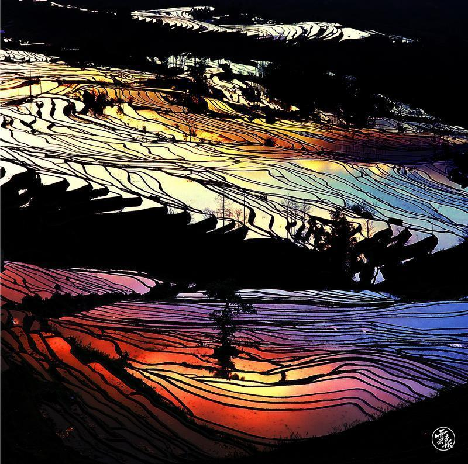
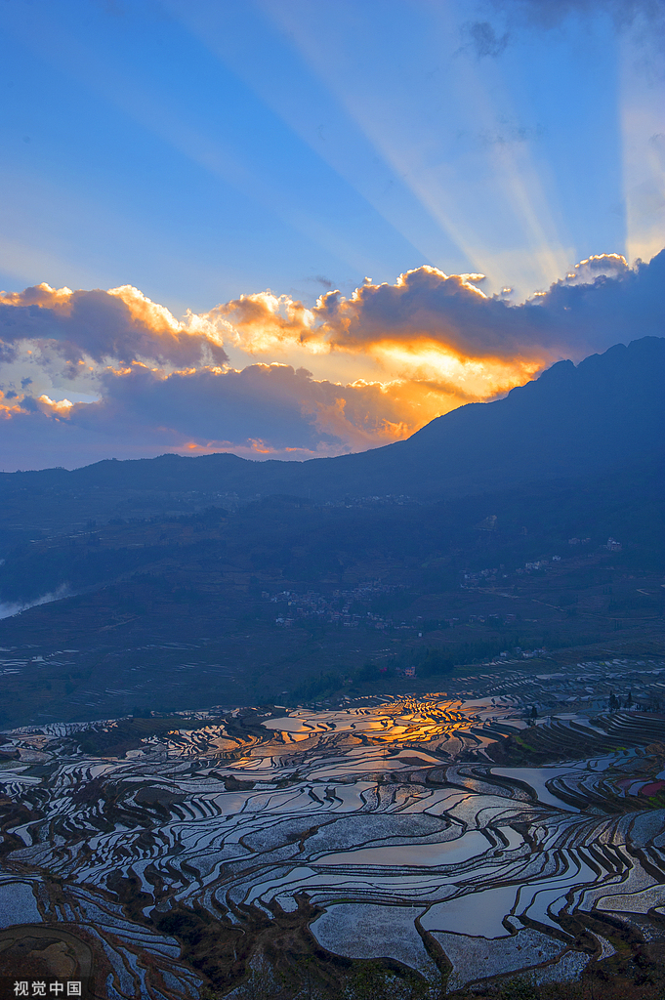
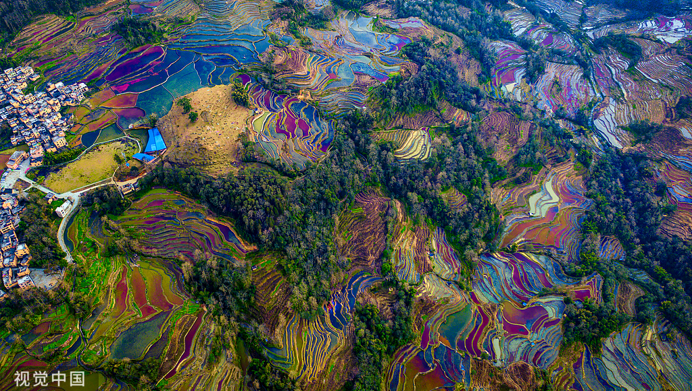
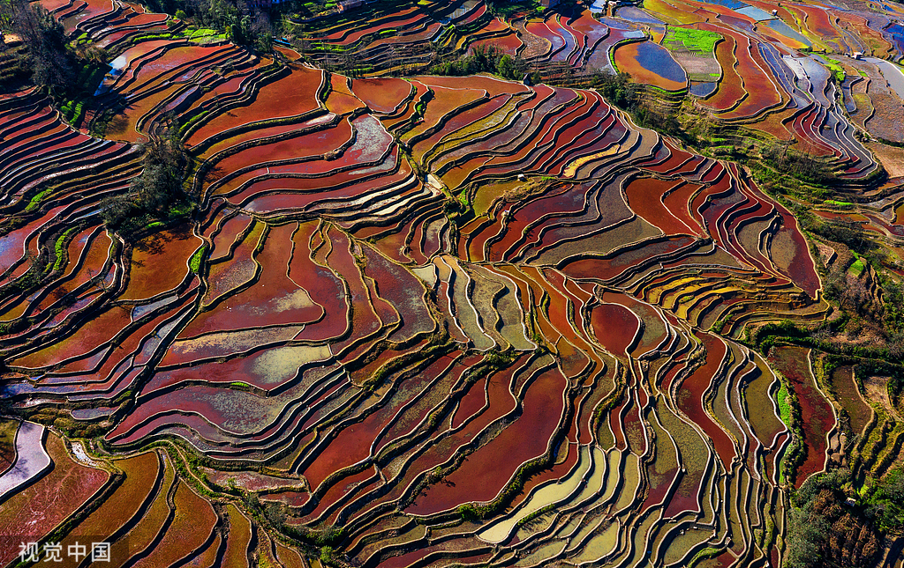
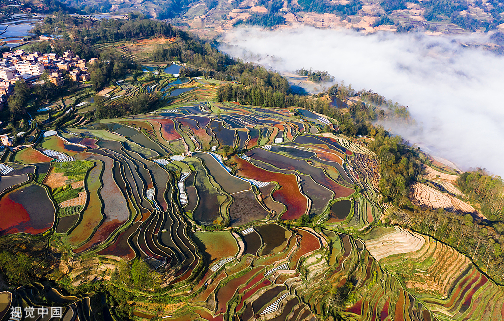
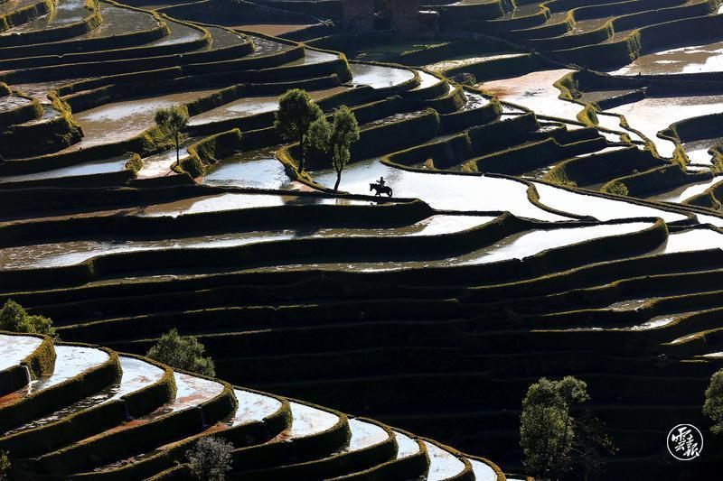

哈尼梯田
Hani Rice Terraces
哈尼梯田位于云南省红河州，是哈尼族人民在哀牢山开垦的梯田，已有1300多年历史。它分布在元阳、红河、金平、绿春四县，以元阳梯田最为壮观。
The Hani Rice Terraces are located in Honghe Prefecture, Yunnan Province. They were developed by the Hani people in the Ailao Mountains and have a history of over 1,300 years. The terraces are distributed across four counties: Yuanyang, Honghe, Jinping, and Lvchun, with the most spectacular ones found in Yuanyang.





